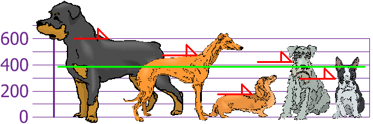
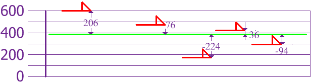
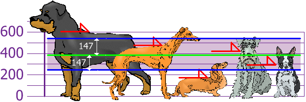
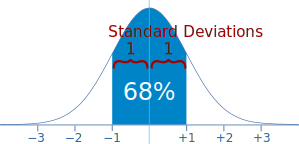
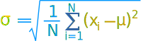
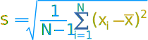

Standard Deviation and Variance
Deviation just means how far from the normal
Standard Deviation
The Standard Deviation is a measure of how spread out numbers are.
Its symbol is σ (the greek letter sigma)
The formula is easy: it is the square root of the Variance. So now you ask, "What is the Variance?"
Variance
The Variance is defined as:
The average of the squared differences from the Mean.
To calculate the variance follow these steps:
- Work out the Mean (the simple average of the numbers)
- Then for each number: subtract the Mean and square the result (the squared difference).
- Then work out the average of those squared differences. (Why Square?)
Example
You and your friends have just measured the heights of your dogs (in millimeters):

The heights (at the shoulders) are: 600mm, 470mm, 170mm, 430mm and 300mm.
Find out the Mean, the Variance, and the Standard Deviation.
Your first step is to find the Mean:
Answer:
| Mean | = | 600 + 470 + 170 + 430 + 3005 |
| = | 19705 | |
| = | 394 |
so the mean (average) height is 394 mm. Let's plot this on the chart:

Now we calculate each dog's difference from the Mean:

To calculate the Variance, take each difference, square it, and then average the result:
| Variance | ||
| σ2 | = | 2062 + 762 + (−224)2 + 362 + (−94)25 |
| = | 42436 + 5776 + 50176 + 1296 + 88365 | |
| = | 1085205 | |
| = | 21704 | |
So the Variance is 21,704
And the Standard Deviation is just the square root of Variance, so:
| Standard Deviation | ||
| σ | = | √21704 |
| = | 147.32... | |
| = | 147 (to the nearest mm) | |
And the good thing about the Standard Deviation is that it is useful. Now we can show which heights are within one Standard Deviation (147mm) of the Mean:

So, using the Standard Deviation we have a "standard" way of knowing what is normal, and what is extra large or extra small.
Rottweilers are tall dogs. And Dachshunds are a bit short, right?
Using

We can expect about 68% of values to be within plus-or-minus 1 standard deviation.
Read Standard Normal Distribution to learn more.
Also try the Standard Deviation Calculator.
But ... there is a small change with Sample Data
Our example has been for a Population (the 5 dogs are the only dogs we are interested in).
But if the data is a Sample (a selection taken from a bigger Population), then the calculation changes!
When you have "N" data values that are:
- The Population: divide by N when calculating Variance (like we did)
- A Sample: divide by N-1 when calculating Variance
All other calculations stay the same, including how we calculated the mean.
Example: if our 5 dogs are just a sample of a bigger population of dogs, we divide by 4 instead of 5 like this:
Think of it as a "correction" when your data is only a sample.
Formulas
Here are the two formulas, explained at Standard Deviation Formulas if you want to know more:
|
The "Population Standard Deviation": |
 | |
| The "Sample Standard Deviation": |  |
Looks complicated, but the important change is to
divide by N-1 (instead of N) when calculating a Sample Standard Deviation.
*Footnote: Why square the differences?
If we just add up the differences from the mean ... the negatives cancel the positives:
 |
4 + 4 − 4 − 44 = 0 |
So that won't work. How about we use absolute values?
|
|4| + |4| + |−4| + |−4|4 = 4 + 4 + 4 + 4 4 = 4 |
That looks good (and is the Mean Deviation), but what about this case:
 |
|7| + |1| + |−6| + |−2|4 = 7 + 1 + 6 + 2 4 = 4 |
Oh No! It also gives a value of 4, Even though the differences are more spread out.
So let us try squaring each difference (and taking the square root at the end):
|
√( 42 + 42 + (-4)2 + (-4)24) = √( 64 4 ) = 4 | |
|
√( 72 + 12 + (-6)2 + (-2)2 4) = √( 90 4 ) = 4.74... |
That is nice! The Standard Deviation is bigger when the differences are more spread out ... just what we want.
In fact this method is a similar idea to distance between points, just applied in a different way.
And it is easier to use algebra on squares and square roots than absolute values, which makes the standard deviation easy to use in other areas of mathematics.